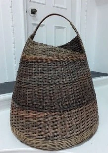

Oriel Ger Y Fenai

MRydym yn arddangos gwaith llawer o artistiaid Gogledd Cymru gydag arddangosfeydd newidiol bob mis o’r flwyddyn.
Rydym hefyd yn cynnig gwasanaeth fframio lluniau pwrpasol o safon.
We exhibit the work of many North Wales artists with changing exhibitions each month of the year.
We also offer a quality bespoke picture framing service.
01248 541143
www.orielgeryfenai.co.uk
orielgeryfenai@hotmail.com
ORIEL GER Y FENAI, HOLYHEAD ROAD, LLANFAIRPWLL, LL61 5YQ
Wedi’i leoli ym mhentref Llanfairpwllgwyngyll. Gallwch ddod o hyd i ni yn union gyferbyn â gorsaf drenau’r pentref. Ewch drwy’r bwa agored, ac yno fe welwch ni.
Located in the village of Llanfairpwllgwyngyll. You can find us directly opposite the village train station. Head through the open archway, and there you will find us.
Steven Mason
Rwy’n newid rhwng peintio mewn olew a phaentio’n ddigidol yn ystod y blynyddoedd diwethaf, yn bennaf rwy’n paentio’r golygfeydd nodweddiadol a’r awyrgylch Ynys Mon ac Eryri.
I switch between painting in oils and painting digitally in recent years, i primarily paint the characteristic scenes and atmosphere around Anglesey and Snowdonia.
07730394608 / 01248 541143
Smasonfineart@aol.co.uk
ORIEL GER Y FENAI, HOLYHEAD ROAD, LLANFAIRPWLL, LL61 5YQ
Wedi’i leoli ym mhentref Llanfairpwllgwyngyll. Gallwch ddod o hyd i ni yn union gyferbyn â gorsaf drenau’r pentref. Ewch drwy’r bwa agored, ac yno fe welwch ni.
Located in the village of Llanfairpwllgwyngyll. You can find us directly opposite the village train station. Head through the open archway, and there you will find us.